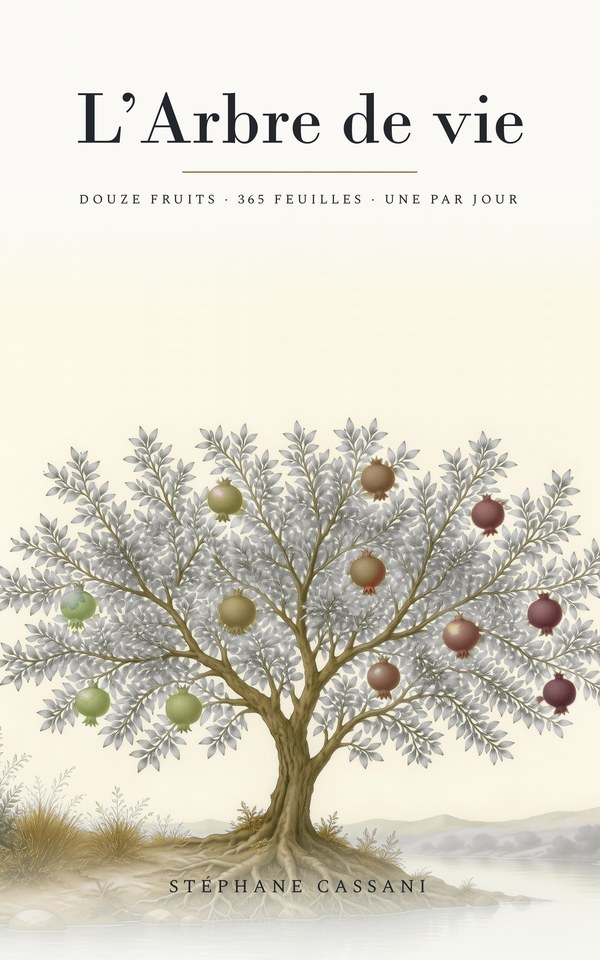

L’Arbre de vie
Stéphane Cassani — Éditions Mania Libris
« … un arbre de vie, produisant douze fois des fruits, rendant son fruit chaque mois, et dont les feuilles servaient à la guérison des nations. » — Apocalypse 22:2
Douze fruits, trois cent soixante-cinq feuilles. Une portion des Écritures par jour, dans l’ordre, pendant une année — texte Louis Segond 1910, une méditation courte, et rien d’autre. Le livre n’a pas de millésime : on peut le commencer n’importe quand, et le recommencer.
Le marque-page calendrier est gratuit dans les deux cas, et un exemplaire cartonné accompagne les livres commandés directement auprès de l’auteur.
- Format152 × 229 mm, 210 pages
- Texte bibliqueLouis Segond 1910, domaine public
- ÉditeurÉditions Mania Libris
Ouvrage conçu, dirigé, révisé et validé par Stéphane Cassani. Certaines méditations ont été rédigées et les illustrations créées avec l’aide d’outils d’intelligence artificielle, sous la révision et la validation de l’auteur.
Le marque-page calendrier

Gratuit, chaque année
Le livre n’a pas d’année ; le marque-page fait le pont. Il associe chaque date à sa feuille, et se renouvelle chaque décembre.
Télécharger le marque-page